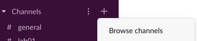
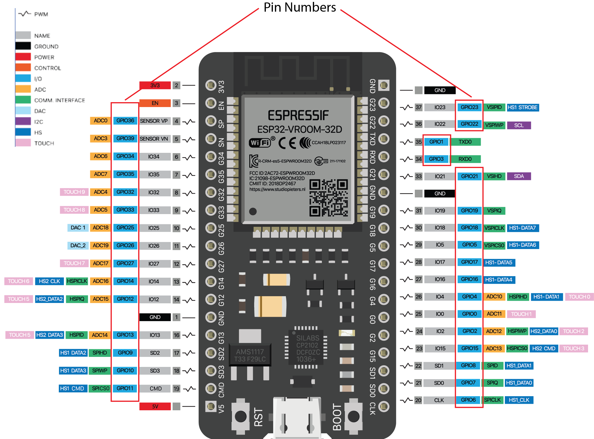
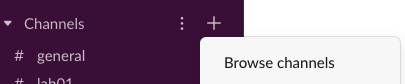

6.810 Engineering Interactive Technologies (fall 2021)
Lab 4: Sensing Input from a Touch Slider
You already built the circuit and wrote the code for the touch buttons on your music card. In this lab, you will build the circuit and write the code for the slider, which can then be used to control the volume of the music that is being played.
Steps:
- Build Slider Circuit
- Extend Microcontroller Code to Read Slider Segments
- Measure Min and Max Signal Thresholds
- Determine Which Slider Segments are Touched
- Determine Slider Value When One Slider Segment is Touched
- Determine Slider Value When Two Slider Segments are Touched
- Write Slider Value to Serial Port
- Add Slider to Card
- Connect Physical Music Card to Processing
Deliverables
At the end of the lab, upload to your student google drive:
- a photo of your slider circuit connected to the printed slider and the ESP microcontroller
- the Arduino code you wrote for Serial Communication of the slider value (.ino file format)
- the Processing code (.pde) of the music card application with the slider
- a short video (.mov or .mp4, max. 1 minute, 20MB or less) showing how you use the printed slider to adjust the volume
Help us Improve Class Materials for Lab4:
Please let us know if you had any trouble with the circuit or programming or if anything was confusing in the write up.
You can add your comments here.
Before you start
Join Slack Channels for 'Lab4' and your table number, e.g. 'Table3': Similar to last lab, please join the lab's slack channel and the channel with the table number you are sitting at.


(1) Build Slider Circuit
The first step is to build the circuit for the slider. Remember that the slider is just a bunch of touch buttons placed right next to each other. Thus, the circuit for each slider segment is the same as for a touch button.
One Sender Pin, Different Receiver Pins: When you wire up your slider segments, remember they can all use the same sender pin but need a different receiver pin. Refer to Lab 2 if you don't remember how this works.
Use 'TOUCH' Pins for Receiving: Remember to use the pins with TOUCHX labels for better signal quality but do not use the one pin labeled as pin0 (TOUCH1) as receiver (you can still use it as sender). Below is the ESP pin out for your reference.

(2) Extend Microcontroller Code to Read Slider Segments
Read Slider Segment Signal Values: Once finished with the wiring, extend your Arduino code to also read each slider segment's touch signal.
Plot each Signal Value to the Serial Plotter: Next, serial print the received touch signals for each slider segment and look at them in the Serial plotter. To visualize only the slider touch signals in the serial plotter, you have to format the serial output in the same way as you did in lab 2:
sliderValue1, sliderValue2, sliderValue3, sliderValue4, sliderValue5 \\end of line
Below you can see the serial plotter output for individually touching each of the five slider segments one after another.
(3) Measure Min and Max Signal Thresholds
Discrete vs. Continuous Touch Detection: For the touch buttons, we were merely interested if the button is touched or not. Thus, we converted the touch signal into a binary value 0 or 1. For the slider, we want to compute at which position on the slider the finger is, i.e. we want a continuous value. This will allow us to more smoothly adjust the music volume rather than jumping from one discrete volume level to the next.
How can we detect where the finger is on the slider? To determine where the finger is on the slider, we need to detect how much of each slider segment is touched. When looking at a slider segment signal in the Serial Plotter, you will notice that the value of a slider segment has a strong correlation with how much area of the slider segment is touched, i.e. the more area your finger covers on the slider segment the higher the value is. Below, we are plotting the signal from the middle slider segment. You can see that the signal is first low because the finger is at the beginning of the slider and not touching the middle segment. As the finger moves towards the middle segment the signal goes up as the overlap area with the finger increases and then goes down once the finger passes it and the overlap area with the finger decreases again.

Before we can determine how much a slider segment is touched, we need to do some preprocessing. You need to repeat the next steps for each slider segment individually since they all have different noise levels and touch signal values due to slight inconstencies in the printing process.
Remove Noise: First, we want to distinguish between noise (i.e. small signal readings when nothing is actually touched) and the value when one segment is just barely touched. To find this minimum threshold, open the Serial Plotter and slide with your finger over the slider. At some point, you will see that the values for the slider segment you want to measure are starting to increase. Write down the minimum value which is consistently above the noise level. Repeat this procedure for each slider segment and store the individual minimum values for each segment in your code.
Determine Max Value when Slider Segment is Fully Touched: Next, determine the maximum value when the slider segment is fully touched with you finger, i.e. your finger overlaps with the entire slider segment. Repeat the procedure for each slider segment and store the value for each segment in your code.
(4) Determine Which Slider Segments are Touched
Now that you know the min signal value that indicates a touch, you are ready to determine which slider segments are being touched.
Determine if Slider Segment is Touched: Write code to determine if a slider segment is touched or not, i.e. if it exceeds the minimum threshold). We recommend that for debugging, you write the result to the serial monitor in the same format as you did in lab2. You can use 0,1,2,3,4 for the slider segment IDs and 0 for not touched and 1 for touched.
(sensor ID),(is_touched);
A sample output for touching the slider between the first two segments should look like:
0,1;
1,1;
2,0;
3,0;
4,0;
(5) Determine Slider Value When One Slider Segment is Touched
Differentiate Between Touching 1 or 2 Slider Segments: Next, extend your code to differentiate between two different scenarios: (1) Only one slider segment is touched at a time, or (2) two segments are touched at the same time. For (2), we want to later interpolate between both slider segment values to determine the relative position of the finger, but let's start with the simple case of touching only one segment.
Assigning Slider Values Based on Which Segment in Touched: In case only one slider segment is touched, you can simply compute the discrete position on the whole slider. Since you have 5 slider segments and your overall slider ranges from 0-1, you can assign a value of 0 when only the first slider segment is touched, 0.25 when only the second slider segment is touched, and so on. Plot the values to the Serial Monitor and see if you can get the correct value when you touch each slider segment individually.
(6) Determine Slider Value When Two Slider Segments are Touched
Now let's look at the more complicated case where the finger is in-between two slider segments, i.e. two slider segments are being touched. In this case we want to interpolate between both slider segment signals to determine the relative position of the finger between the two segments.
Determine How Much Each Segment is Touched: Let's first determine how much each of the two segments is being touched. The best way to do this is to divide each slider segment signal by its max value, which gives you the fraction that represents how much a slider segment was touched. You already recorded the max value in section (3). After computing the fraction, write the result to the Serial Monitor and see if the fraction increases as you touch more area of the slider segment.
Compute Relative Position of a Finger Between Two Slider Segments: Now that you know how much each slider segment is being touched, you can compute the relative position of the finger between the two slider segments. This will be a value between 0.0-1.0 where smaller values represent that more of the left slider segment is touched, and larger values represent that more of the right slider segment is touched. To determine the relative position, you need to compute the average between both values. When computing the average, keep in mind that the left segment will drop in value as the finger moves to the right, which you need to reflect in your formula for the average: ((1-frac1)+frac2)/2. Write this value to the serial monitor and see if it increases as your finger slides from the left to the right on the two segments.
Scaling the Relative Position to the Slider Spacing: Remember that our slider spacing is in 0.25 increments, i.e. slider segment 1-2 cover a range of 0-0.25, slider segment 2-3 cover a range of 0.25 - 0.5 and so on. However, the relative position between two slider segments we just computed is a value from 0-1.0. We thus need to scale down this value to our slider segment spacing by multiplying it with 0.25. For example, if we have a relative position of 0.5, which indicates that the finger is exactly in the middle, multiplying the relative position 0.5 by the slider spacing 0.25 gives us 0.125, which is in the middle between two slider segments.
Computing Overall Slider Value: Finally, you still have to add the scaled relative position, which will always be between 0.0 - 0.25, to the overall slider position. All you need to do is to add this value to the discrete slider value of the segment that is touched first. For instance, if you have a relative position of 0.18 for slider segment 3 and 4, which cover a range of 0.5 - 0.75, all you need to do is to add this value to 0.5 and you receive an overall slider value of 0.68.
(7) Write Slider Value to Serial Port
Once you are ready, clean up what you write to the Serial Port. We only want to write the overall slider value to the Serial Port, not the individual slider segments, so we can later read the overall slider value into Processing. Assign the slider value the ID 3 since we already used ID 0, 1, and 2 for the touch buttons. The output should print continuously as long as the slider is touched.
(sensor ID),(slider_value);
(sensor ID) is 3, and represents the ID of the slider (we already used up sensor IDs 0, 1, 2 for the touch buttons).
(slider_value) is ranging from 0.0 to 1.0 to indicate the overall slider position.
Here is a sample output showing that the finger is moving from the left to the right on the slider:
3,0.78;
3,0.86;
3,0.97;
(8) Add Slider to Music Card
Before we use our physical slider to control the music volume, let's first implement a digital slider to test the music volume functionality.
Add Slider to Code: Open the Processing music card code from lab3. We already implemented a class Slider for you. Add a new slider to the code in the draw() function with:
mySliders.add(new Slider(start_x, start_y, end_x, end_y));
You should be able to control the slider by dragging your mouse with the left mouse button pressed as shown below:


Create Slider Events to Control the Music Volume: Next, we want to increase the music volume when the slider is dragged to the right and decrease the music volume when the slider is dragged to the left. To create events on mouse drag, we need to implement several mouseDragged() events. A part of this is already done further down in the code. Extend the code so that it changes the music volume based on the slider level.
You might find the following functions from the Audio and Slider classes useful:
music.changeVolume(double intensity);
Slider.getIntensity();
Once you finished your code, test if the music volume changes by first playing a song with the digital note touch buttons and then dragging the slider to the left and right to adjust the music volume.
Hide the Slider: Similar to the previously added buttons, you can hide the slider by pressing the 'h' key on your keyboard while your program runs. If you want to see the slider again, press 's' for show.
(9) Connect Physical Music Card to Processing
Now that you can control the slider digitally, you area ready to connect your physical slider so you can also adjust the volume from your card.
Extend Serial Read Code to Slider: Extend your serial read code to also read in the serial messages for the overall slider value.
Use Physical Slider Value to Adjust Volume: Once you read in the value from the physical slider, use it to change the volume of the music. Test if everything works by using your physical printed card to play/pause songs and the physical slider to adjust the music volume. If it works, congrats, you are done!


Deliverables
At the end of the lab, upload to your student google drive:
- a photo of your slider circuit connected to the printed slider and the ESP microcontroller
- the Arduino code you wrote for Serial Communication of the slider value (.ino file format)
- the Processing code (.pde) of the music card application with the slider
- a short video (.mov or .mp4, max. 1 minute, 20MB or less) showing how you use the printed slider to adjust the volume
Please let us know if you had any trouble with the circuit or programming or if anything was confusing in the write up.
You can add your comments here.

sliderValue1, sliderValue2, sliderValue3, sliderValue4, sliderValue5 \\end of line(sensor ID),(is_touched);0,1;
1,1;
2,0;
3,0;
4,0;
3,0.78;
3,0.86;
3,0.97;